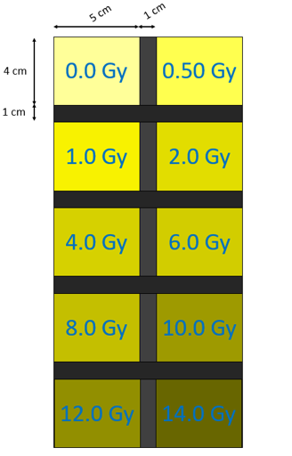

Para la calibración se utilizan 10 películas de 4 cm x 5 cm, 9 de ellas irradiadas con dosis de 0.50, 1.00, 2.00, 4.00, 6.00, 8.00, 10.00, 12.0 y 14.00 Gy.
La digitalización de las películas antes y después de su irradiación, deberá ser de tal modo que en la imagen se obtenga el acomodo mostrado en la figura 1, utilizando los parámetros:
